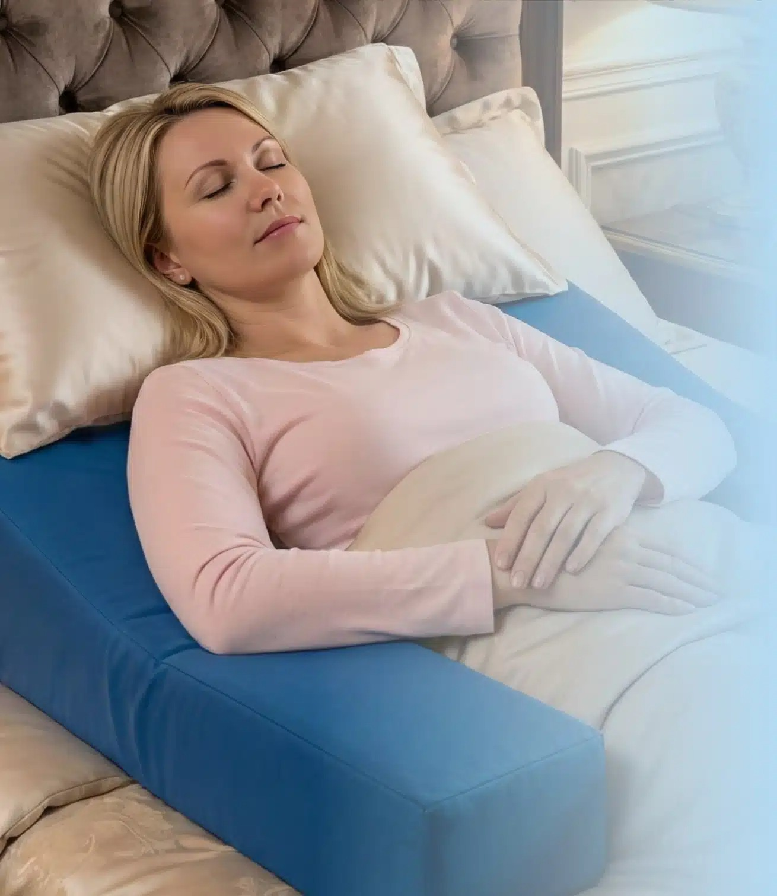
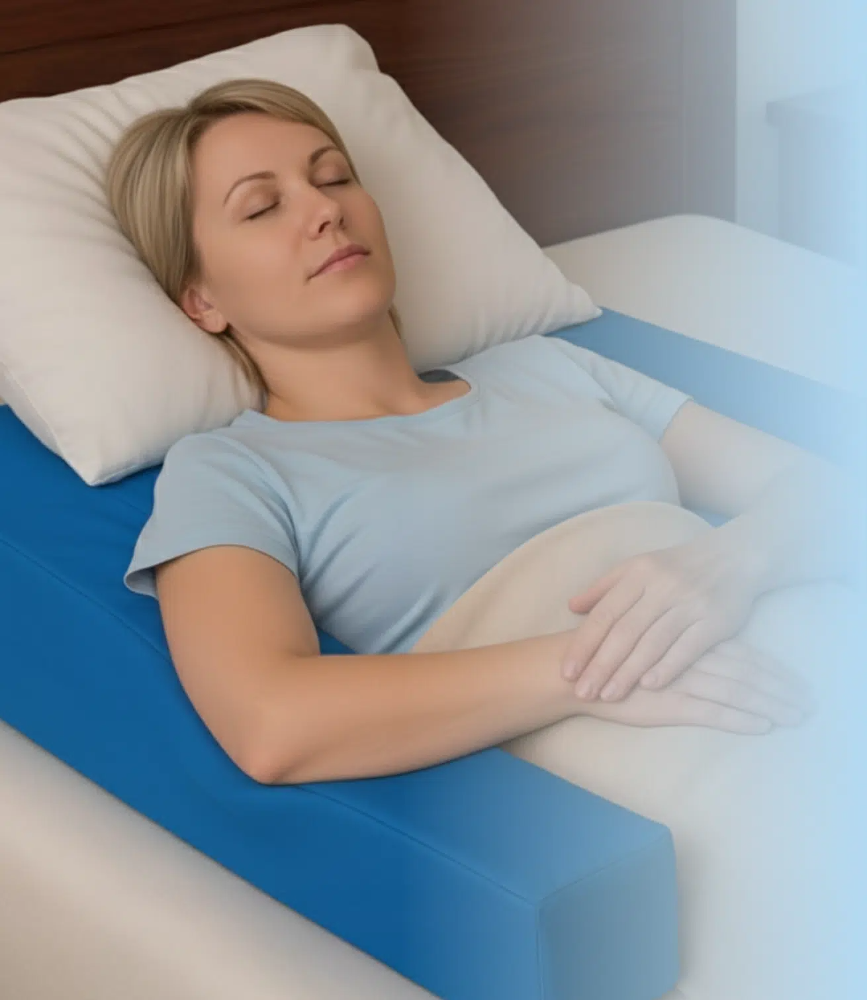
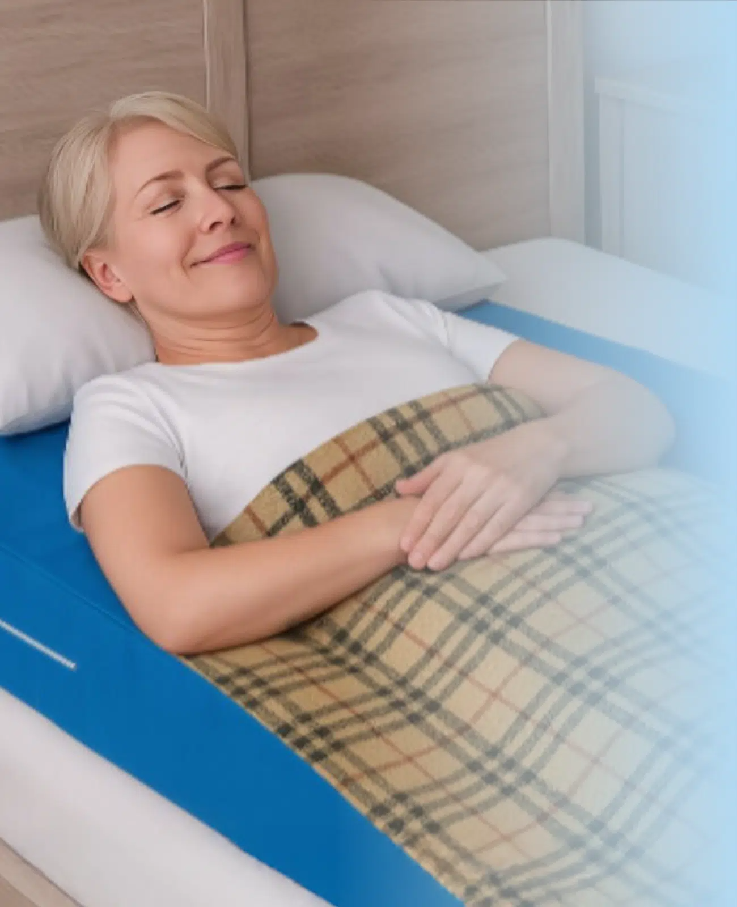
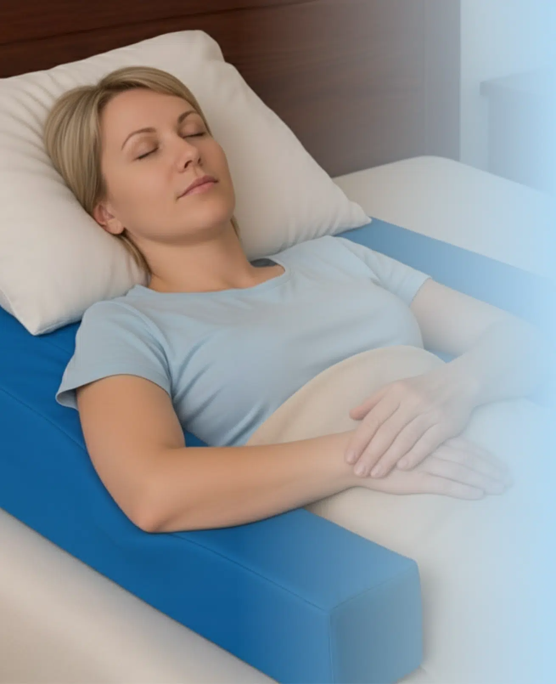
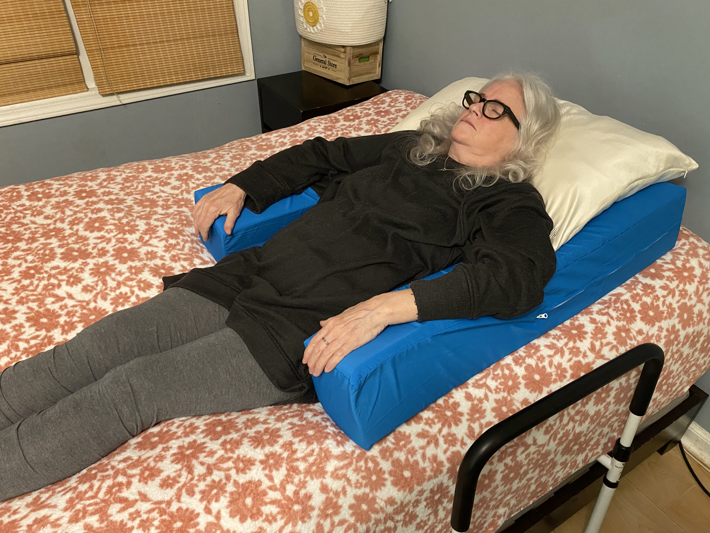
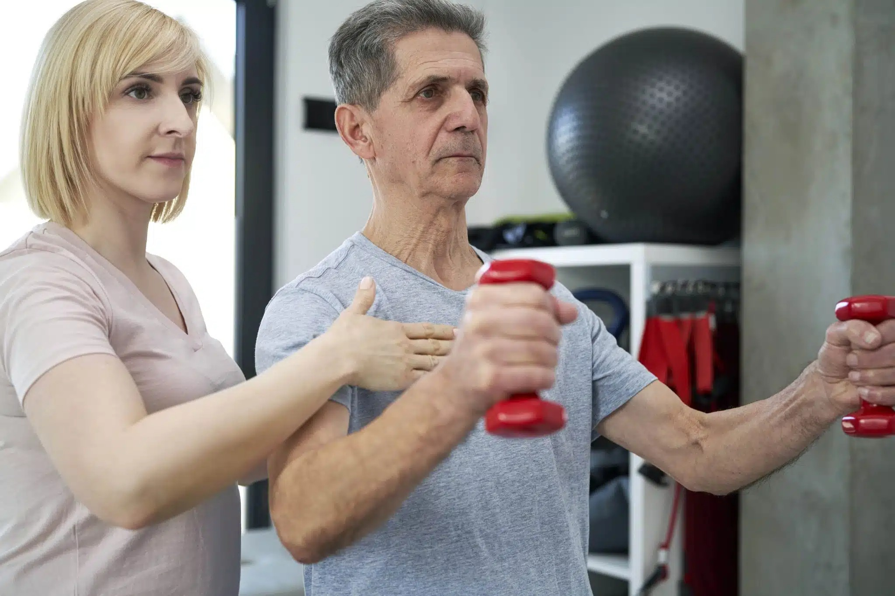
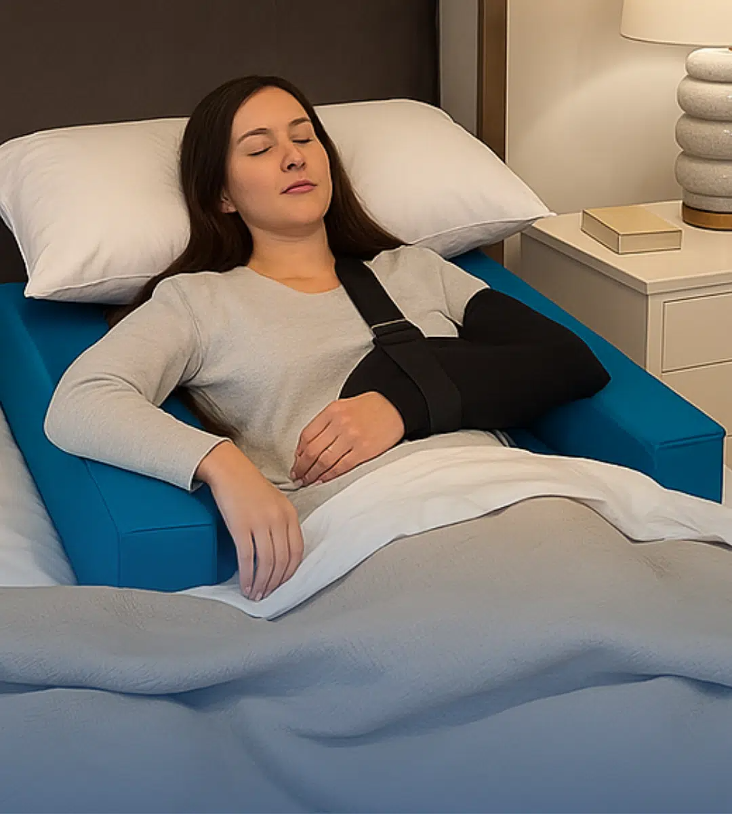

01 / The Recliner
You can't sleep in a recliner.
Hours of staring at the ceiling. Neck pain on top of shoulder pain. You just want your bed back.
For shoulder, rotator cuff &
post-surgical recovery
The clinically positioned pillow system designed for surgery recovery, so you can rest in your own bed, not stuck in a recliner.

Most patients are told to sleep in a recliner for weeks. Most can't.
Hours of staring at the ceiling. Neck pain on top of shoulder pain. You just want your bed back.
Lying flat pulls on the surgery site. Side sleeping is off-limits. Nothing keeps your arm where the surgeon said to keep it.
Sleep is when your body heals. Without it, recovery stalls and the pain feels louder.
Introducing
Restore You is an FDA-registered therapeutic support system designed around the Maximally Loose Packed Position (MLPP). That's the position your shoulder, joints, and muscles relax into most naturally after surgery. It cradles your arm, off-loads your shoulder, and lets you sleep on your back or your good side, in your own bed, from night one.
Engineered to hold your shoulder in MLPP, the position used in operating rooms to reduce strain on the surgical site.
Cradles your arm and supports your back from the first night home.
FDA-registered, made from medical-grade foam and breathable, washable covers.
No straps, no pumps, no setup. Place it on your bed and lie down.
The Method
After surgery, your shoulder heals fastest when its joint capsule and surrounding muscles are at their lowest tension. Surgeons call this the Maximally Loose Packed Position, or MLPP. Restore You is the only at-home sleep system designed to hold you there all night.

The wedge cradles your upper back at a gentle incline. The same angle used in post-op recovery rooms.

The arm support holds your operated shoulder in slight abduction and forward flexion. This loose-packed position minimizes capsule tension.

With your shoulder, neck, and back supported, you can finally fall asleep, and stay asleep, at home.
From rotator cuff repair to bicep tenodesis to mastectomy recovery. Here's what patients tell us after their first night with Restore You.


I hadn't slept more than two hours in a row in eleven days. The first night I used Restore You I slept six. My wife cried when she saw me come downstairs in the morning.Mark R.Rotator cuff repair · Week 2 recovery
My surgeon told me I'd be in a recliner for a month. I made it three nights. Restore You got me back into my own bed, and back into sleep that actually felt like sleep.Janet P.Total shoulder replacement · Week 1 recovery
After my mastectomy I dreaded going to bed. The Restore You pillow holds me in a position that doesn't pull on the incisions. I slept on the second night home.Diane K.Breast surgery · Week 1 recovery
The numbers behind the rest
*Based on internal customer survey, 2024. Individual results vary by surgery type and surgeon protocol.
Honest, plain-language guides on what to expect, how to sleep, and how to heal. Written with input from orthopedic surgeons and post-surgical patients.
What recovery actually feels like from day 1 to month 4 after bicep tenodesis or distal biceps repair, including sleep, range of motion, and return-to-work milestones.
Read guide →
Not all wedge pillows are built for surgery. Here's what to look for, and why a generic pillow can actually slow your recovery.
Read guide →Why post-surgical depression is more common than people talk about, and what helps. Includes when to call your surgeon and when to call your primary care doctor.
Read guide →For Healthcare Providers
Restore You is used in over 300 orthopedic, sports medicine, and surgical practices nationwide. If you're a healthcare provider, we offer clinical evidence packs, sample units, and bulk patient-discount codes.
For Healthcare ProvidersFrequently asked
Have something we haven't covered? Talk to a real human. We answer within one business day.
Ask us anything →Tonight
Restore You ships in 1 to 2 business days. If it's not the answer to better sleep, we'll take it back within 30 nights. No questions, no shipping fees.
Free U.S. shipping over $99 · 30-night trial · FDA-registered · HSA/FSA eligible